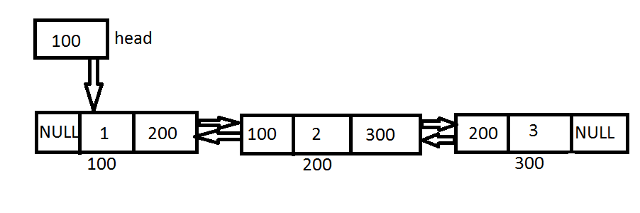
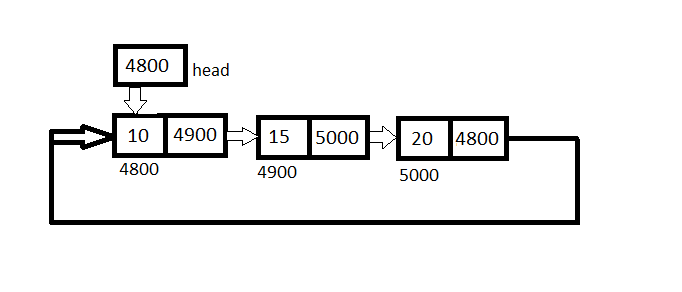
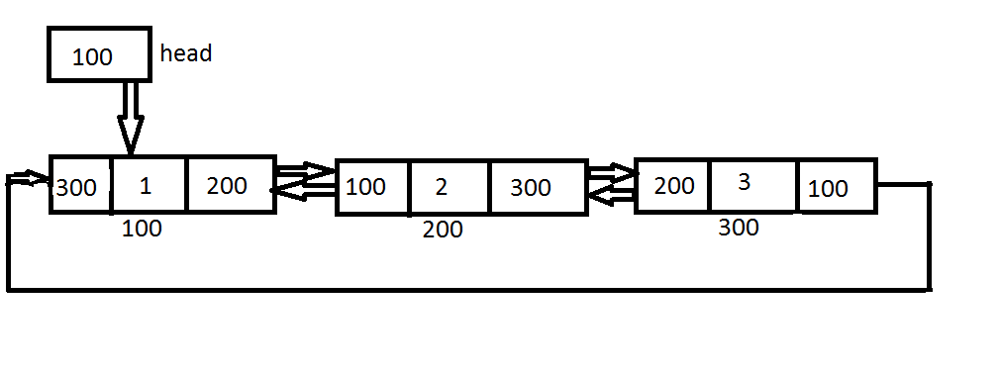

types of Linked-list:-
singly Linked-list=
It is commonly used linked-list.It's elements contain only two parts,one part is for data that contain keyvalue and second part is pointer part that contain address of next node.
Node syantax:-

Example:-
Representation:-
struct node { int data; struct node *next; };Doubly Linked-list=
It is linear data-structure ,it's elements contain three parts,one part is for data that contain keyvalue and two other parts are pointer parts that conatain address of previous node and next node.
Node syantax:-

Example:-

Representation:-
struct node { struct node *prev; int data; struct node *next; };Circular Linked-list=
It is similar to single linked-list,in this type of linked-list the last node hold tha address of first node.we can traverse in any direction.
Example:-

Representation:-
struct node { int data; struct node *next; };double Circular Linked-list=
It has both feature of circular linked-list and doubly linked-list.In this each node contain the keyvalue,previous node's address and last node's address and the last node holds the address of first node.
Example:-

Representation:-
struct node { struct node *prev; int data; struct node *next; };